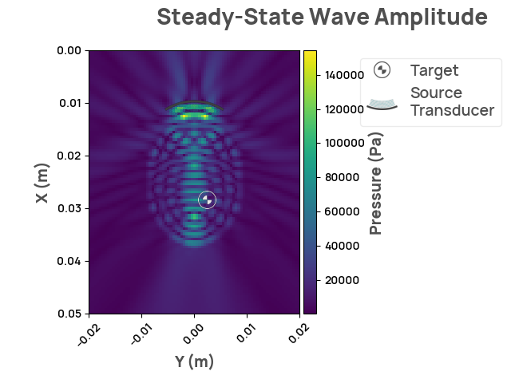
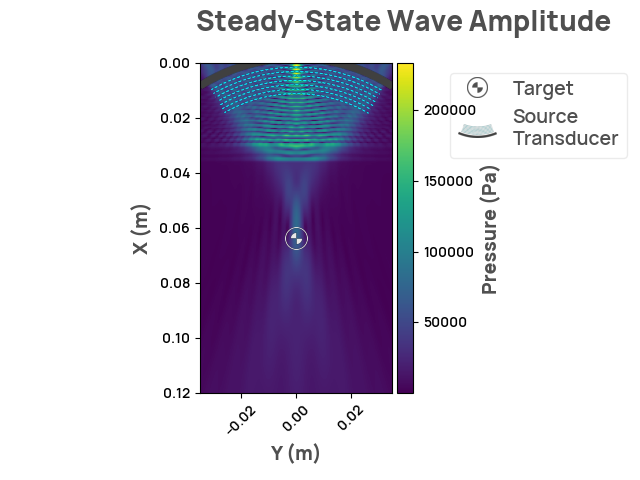

Note
Click here to download the full example code
Plot scenarios
This example demonstrates how to execute a steady state simulation using ndk
import neurotechdevkit as ndk
def plot_scenario(scenario_id):
print(f"Simulating scenario: {scenario_id}")
scenario = ndk.make(scenario_id)
result = scenario.simulate_steady_state()
result.render_steady_state_amplitudes(show_material_outlines=False)
Out:
/home/runner/work/neurotechdevkit/neurotechdevkit/.venv/lib/python3.10/site-packages/pkg_resources/__init__.py:121: DeprecationWarning: pkg_resources is deprecated as an API
warnings.warn("pkg_resources is deprecated as an API", DeprecationWarning)
/home/runner/work/neurotechdevkit/neurotechdevkit/.venv/lib/python3.10/site-packages/pkg_resources/__init__.py:2870: DeprecationWarning: Deprecated call to `pkg_resources.declare_namespace('mpl_toolkits')`.
Implementing implicit namespace packages (as specified in PEP 420) is preferred to `pkg_resources.declare_namespace`. See https://setuptools.pypa.io/en/latest/references/keywords.html#keyword-namespace-packages
declare_namespace(pkg)
/home/runner/work/neurotechdevkit/neurotechdevkit/.venv/lib/python3.10/site-packages/pkg_resources/__init__.py:2870: DeprecationWarning: Deprecated call to `pkg_resources.declare_namespace('sphinxcontrib')`.
Implementing implicit namespace packages (as specified in PEP 420) is preferred to `pkg_resources.declare_namespace`. See https://setuptools.pypa.io/en/latest/references/keywords.html#keyword-namespace-packages
declare_namespace(pkg)
WARNING: DEVITO_ARCH environment variable not set and might cause compilation errors. See NDK documentation for help.
Simulating scenario: scenario-0-v0

Out:
Simulating scenario: scenario-0-v0
creating a grid with shape: (101, 81) for extent: [0.05 0.04] m
/home/runner/work/neurotechdevkit/neurotechdevkit/src/neurotechdevkit/scenarios/_resources.py:152: UserWarning: The simulation might run out of memory:
Estimated RAM required : 8 GB, available 7 GB.
warnings.warn(
Estimated time to complete simulation: 44 seconds. Memory required is 8 GB (available 7.26867968 GB). These values are approximated.
Default Devito configuration:
* autotuning=off
* develop-mode=False
* mpi=False
* log-level=DEBUG
* language=openmp
(ShotID 0) Preparing to run state for shot
(ShotID 0) Estimated bandwidth for the propagated wavelet 0.493-0.502 MHz
(ShotID 0) Spatial grid spacing (0.500 mm | 5.972 PPW) is below dispersion limit (0.597 mm | 5.000 PPW)
(ShotID 0) Time grid spacing (0.083 μs | 46%) is above OT2 limit (0.080 μs) and below OT4 limit (0.145 μs)
(ShotID 0) Selected undersampling level 4
(ShotID 0) Selected time stepping scheme OT4
/home/runner/work/neurotechdevkit/neurotechdevkit/.venv/lib/python3.10/site-packages/devito/finite_differences/differentiable.py:224: DeprecationWarning: NotImplemented should not be used in a boolean context
return super(Differentiable, self).__eq__(other) and\
Operator `acoustic_iso_state` instance configuration:
* subs={h_x: 0.0005, h_y: 0.0005}
* opt=advanced
* platform=None
/home/runner/work/neurotechdevkit/neurotechdevkit/.venv/lib/python3.10/site-packages/devito/finite_differences/differentiable.py:224: DeprecationWarning: NotImplemented should not be used in a boolean context
return super(Differentiable, self).__eq__(other) and\
Operator `acoustic_iso_state` generated in 10.05 s
* lowering.Clusters: 4.49 s (44.7 %)
* specializing.Clusters: 3.07 s (30.6 %)
* lowering.Expressions: 3.10 s (30.9 %)
Flops reduction after symbolic optimization: [3457 --> 892]
recompiling for non-existent cache dir (/tmp/devito-codepy-uid1001/4f8ef50/7b6a0b81548c7c11f06508cea7cb834a).
gcc -O3 -g -fPIC -Wall -std=c99 -march=native -Wno-unused-result -Wno-unused-variable -Wno-unused-but-set-variable -ffast-math -shared -fopenmp /tmp/devito-jitcache-uid1001/4f8ef5056730ae3c7fbdc107b4e51890098e4f0b.c -lm -o /tmp/devito-jitcache-uid1001/4f8ef5056730ae3c7fbdc107b4e51890098e4f0b.so
Operator `acoustic_iso_state` jit-compiled `/tmp/devito-jitcache-uid1001/4f8ef5056730ae3c7fbdc107b4e51890098e4f0b.c` in 4.64 s with `GNUCompiler`
/home/runner/work/neurotechdevkit/neurotechdevkit/.venv/lib/python3.10/site-packages/numpy/ctypeslib.py:137: DeprecationWarning:
`numpy.distutils` is deprecated since NumPy 1.23.0, as a result
of the deprecation of `distutils` itself. It will be removed for
Python >= 3.12. For older Python versions it will remain present.
It is recommended to use `setuptools < 60.0` for those Python versions.
For more details, see:
https://numpy.org/devdocs/reference/distutils_status_migration.html
from numpy.distutils.misc_util import get_shared_lib_extension
Simulating scenario: scenario-1-2d-v0

Out:
Simulating scenario: scenario-1-2d-v0
creating a grid with shape: (241, 141) for extent: [0.12 0.07] m
/home/runner/work/neurotechdevkit/neurotechdevkit/src/neurotechdevkit/scenarios/_resources.py:152: UserWarning: The simulation might run out of memory:
Estimated RAM required : 8 GB, available 7 GB.
warnings.warn(
Estimated time to complete simulation: 47 seconds. Memory required is 8 GB (available 7.26867968 GB). These values are approximated.
/home/runner/work/neurotechdevkit/neurotechdevkit/.venv/lib/python3.10/site-packages/devito/finite_differences/differentiable.py:224: DeprecationWarning: NotImplemented should not be used in a boolean context
return super(Differentiable, self).__eq__(other) and\
/home/runner/work/neurotechdevkit/neurotechdevkit/.venv/lib/python3.10/site-packages/devito/finite_differences/differentiable.py:224: DeprecationWarning: NotImplemented should not be used in a boolean context
return super(Differentiable, self).__eq__(other) and\
gcc -O3 -g -fPIC -Wall -std=c99 -march=native -Wno-unused-result -Wno-unused-variable -Wno-unused-but-set-variable -ffast-math -shared -fopenmp /tmp/devito-jitcache-uid1001/8aed0abf685aca05537adb2a263f72cdb8d7f4cf.c -lm -o /tmp/devito-jitcache-uid1001/8aed0abf685aca05537adb2a263f72cdb8d7f4cf.so
Simulating scenario: scenario-2-2d-v0

Out:
Simulating scenario: scenario-2-2d-v0
creating a grid with shape: (451, 341) for extent: [0.225 0.17 ] m
/home/runner/work/neurotechdevkit/neurotechdevkit/src/neurotechdevkit/scenarios/_resources.py:152: UserWarning: The simulation might run out of memory:
Estimated RAM required : 8 GB, available 7 GB.
warnings.warn(
Estimated time to complete simulation: 1 minutes. Memory required is 8 GB (available 7.26867968 GB). These values are approximated.
/home/runner/work/neurotechdevkit/neurotechdevkit/.venv/lib/python3.10/site-packages/devito/finite_differences/differentiable.py:224: DeprecationWarning: NotImplemented should not be used in a boolean context
return super(Differentiable, self).__eq__(other) and\
/home/runner/work/neurotechdevkit/neurotechdevkit/.venv/lib/python3.10/site-packages/devito/finite_differences/differentiable.py:224: DeprecationWarning: NotImplemented should not be used in a boolean context
return super(Differentiable, self).__eq__(other) and\
gcc -O3 -g -fPIC -Wall -std=c99 -march=native -Wno-unused-result -Wno-unused-variable -Wno-unused-but-set-variable -ffast-math -shared -fopenmp /tmp/devito-jitcache-uid1001/0ec68a19d4dc4792357f350ee80ee7e46d45a036.c -lm -o /tmp/devito-jitcache-uid1001/0ec68a19d4dc4792357f350ee80ee7e46d45a036.so
Total running time of the script: ( 1 minutes 7.043 seconds)
Download Python source code: plot_scenarios.py